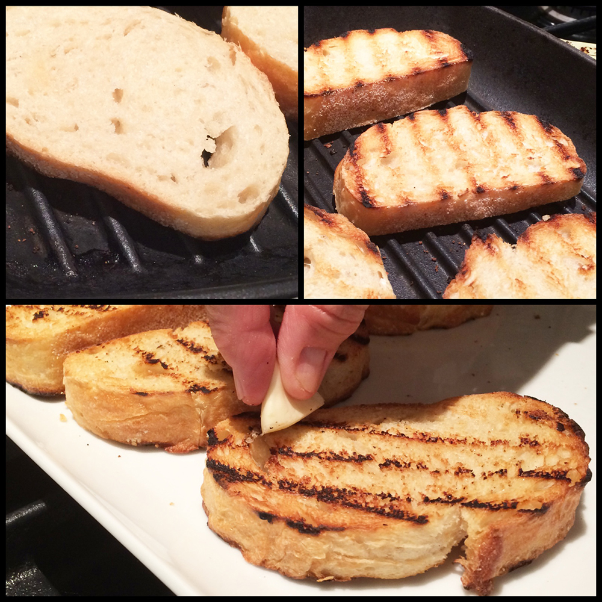

Step 2: Heat a griddle pan and toast the ciabatta slices until they have lovely dark griddle marks. Tear up the toasted bread into chunks or, if using carta di musica, break up into pieces and toss with a drizzle of olive oil and a good pinch of salt and pepper. Get yourself a medium-sized earthenware dish, drizzle it with a little olive oil then add the seasoned, toasted bread.
